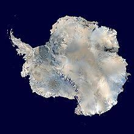

Антаркти́да — континент, расположенный на самом юге Земли. Центр Антарктиды примерно совпадает с южным географическим полюсом. Антарктиду омывают воды Атлантического, Индийского и Тихого океанов. С 2000 года воды, омывающие Антарктиду к югу от 60° ю. ш., по решению Международной гидрографической организации предложено называть Южным океаном.
Площадь континента составляет около 14 107 000 км² (из них шельфовые ледники — 930 000 км², острова — 75 500 км²). При этом средняя высота поверхности Антарктиды самая большая из всех континентов. Помимо полюса холода, в Антарктиде располагаются точки самой низкой относительной влажности воздуха, самого сильного и продолжительного ветра и самой интенсивной солнечной радиации.
Антарктидой также называют часть света, состоящую из материка Антарктиды и прилегающих островов.
Антарктида — самый высокий континент Земли, средняя высота поверхности континента над уровнем моря составляет более 2000 м,
а в центре континента достигает 4000 метров. Бо́льшую часть этой высоты составляет постоянный ледниковый покров континента
, под которым скрыт континентальный рельеф, и лишь 0,3 % (около 40 тысяч км²) её площади свободны ото льда — в основном в
Западной Антарктиде и Трансантарктических горах: острова, участки побережья, так называемые «сухие долины» и отдельные гребни и горные вершины (нунатаки), возвышающиеся над ледяной поверхностью. Трансантарктические горы, пересекающие почти весь материк, делят Антарктиду на две части — Западную Антарктиду и Восточную Антарктиду, имеющие различное происхождение и геологическое строение. На востоке находится высокое (наибольшее возвышение поверхности льда 4004 м над уровнем моря) покрытое льдом Советское плато. Западная часть состоит из группы гористых островов, соединённых между собой льдом. На тихоокеанском побережье расположены Антарктические Анды, высота которых превышает 4000 м; самая высокая точка континента — 4892 м над уровнем моря — массив Винсон в горах Элсуорт. В Западной Антарктиде находится и глубочайшая депрессия континента — впадина Бентли, вероятно, рифтового происхождения. Глубина впадины Бентли, заполненной льдом, достигает 2555 м ниже уровня моря.